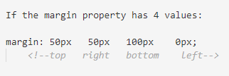
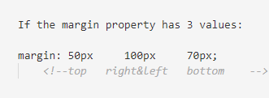
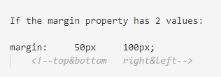

CSS MARGIN & PADDING
CSS MARGIN
CSS margins are used to create space around the element. We can set the different sizes of margins for individual sides(top, right, bottom, left).
- margin-top: It is used to set the top margin of an element.
- margin-right used to set the right margin of an element.
- margin-bottom: used to specify the amount of margin to be used on the bottom of an element.
- margin-left:uused to set the width of the margin on the left of the desired element.




CSS PADDING
Paddings in CSS are used to add space around an element inside a set boundary. Different paddings may be selected for each side (top, right, bottom, left).
- padding-top: It is used to set the top padding of an element.
- padding-right: used to set the right padding of an element.
- padding-bottom: used to specify the amount of padding to be used on the bottom of an element.
- padding-left: used to set the width of the padding on the left of the desired element.